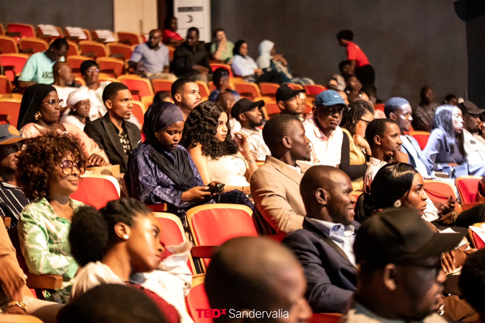
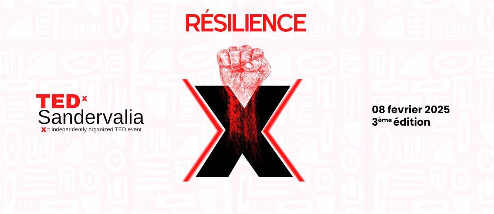
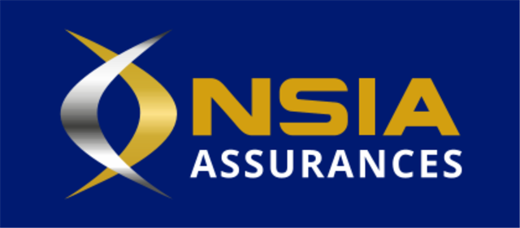
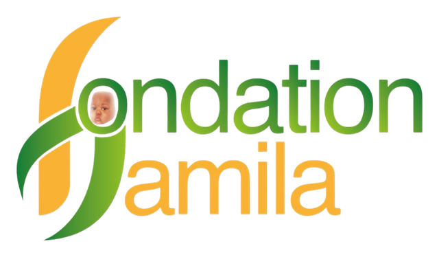
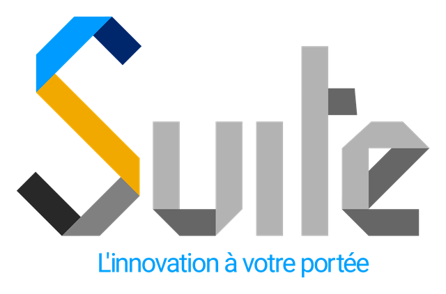
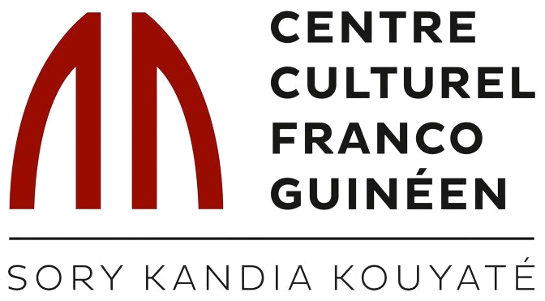

4e édition · 26 septembre 2026
Les Révoltés du Possible
Cinq speakers, une scène à Conakry et une conviction : le monde tel qu'il est aujourd'hui n'est pas le seul monde possible. Revivez la 4e édition de TEDxSandervalia.
Rendez-vous en 2027 pour la 5e édition
Thème, date et lieu seront dévoilés très bientôt. Speakers, partenaires, bénévoles : l'aventure se prépare dès maintenant.
Pourquoi TEDxSandervalia ?
Des idées qui méritent d'être partagées, nées en Guinée.
Avec l'ambition de diffuser des idées qui changent le monde, TED a créé le programme TEDx : des événements locaux, organisés de façon indépendante, qui réunissent des personnes autour d'une expérience de type TED.
TEDxSandervalia est l'un d'eux. Depuis 2022, il offre à Conakry une scène où des femmes et des hommes aux parcours différents partagent une idée, une expérience, une conviction — en 18 minutes maximum.
Découvrir notre histoire
4éditions depuis 2022
18'maximum par talk
5talks en 2026
1scène à Conakry
Édition 2026
Tous les talks
Les speakers

Maimouna Barry

Amadou Saada Tall
Entrepreneur & Ecosystem Builder

Ali Baldé
Co-fondateur de Toques et Gourmandise Événementiel

Elhadj Bah
2022 – 2026
Toutes les éditions
TEDxSandervalia depuis l'origine

2026 · 4e édition
Les Révoltés du Possible
26 septembre 2026 · CCFG, Conakry
Découvrir →
2025 · 3e édition
Résilience
8 février 2025 · Radisson Blu, Conakry
Découvrir →
2023 · 2e édition
L'Afrique à la croisée des chemins
25 février 2023 · CanalOlympia Kaloum
Découvrir →
2022 · 1re édition
Regarder l'avenir avec confiance : quelles sont les clés de la réussite ?
Février 2022 · CanalOlympia Kaloum
Découvrir →
Nos vidéos
Les talks 2026 arrivent bientôt en ligne.
Chaque talk est filmé puis publié sur la chaîne YouTube officielle TEDx Talks, pour que les idées partagées à Conakry voyagent bien au-delà de la salle.
Chaîne TEDx Talks
Bientôt disponibles
Montage en cours
S'engager
Faites partie de l'aventure
TEDxSandervalia est porté par des Guinéens de l'intérieur et de la diaspora. Il existe plusieurs façons de nous rejoindre.
Proposer un speaker
Vous connaissez une personne dont l'idée mérite d'être entendue ? Proposez-la pour la 5e édition.
ProposerDevenir partenaire
Associez votre image à une communauté convaincue que les idées ont le pouvoir de changer le monde.
Nous contacterDevenir bénévole
Chaque édition prend vie grâce à une équipe de bénévoles. Développez de nouvelles compétences et rencontrez des personnes inspirantes.
Rejoindre l'équipeÊtre révolté du possible, c'est refuser de considérer que le monde tel qu'il est aujourd'hui est le seul monde possible.
Merci
Nos partenaires
Ils ont rendu l'édition 2026 possible




Et si le possible était plus grand que ce que nous imaginons ?
Écrivez-nous pour proposer un talk, soutenir l'événement ou simplement être tenu informé de la 5e édition.